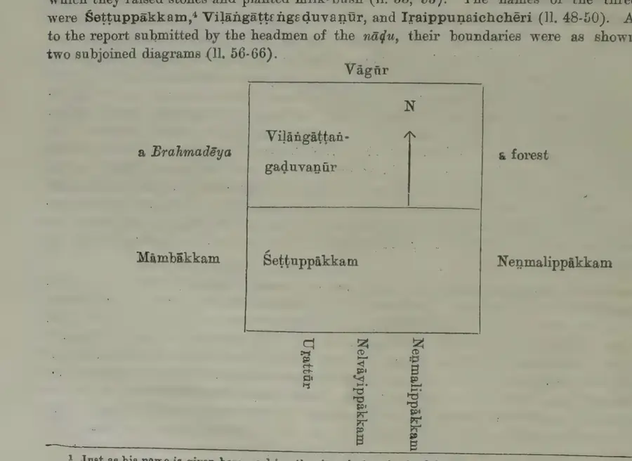
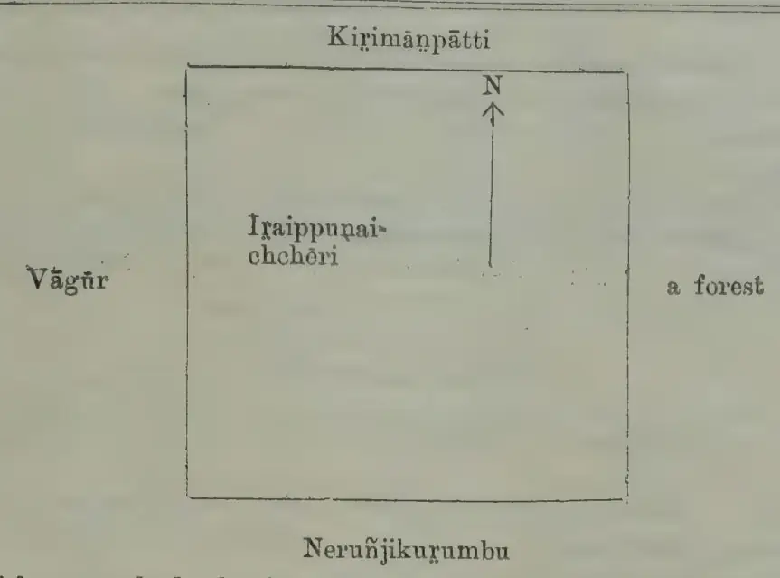

No. 2.—BAHUR PLATES OF NRIPATUNGAVARMAN.
BY PROFESSOR E. HULTZSCH, PH.D.; HALLE (SAALE).
As stated by M. Julien Vinson, this inscription is engraved on five copper-plates which were discovered by M. Jules Delafon2 in 1879 ‘at a depth of about one metre, in the middle of a structure of bricks, at six metres south of the pagoda of Bāhūr, an important locality on the south of Pondicherry, from which it is 23.5 kilometres distant.’ The plates are now preserved in the Bibliothèque Nationale, Paris. They measure about 91.5 millimetres in height, 201.9 mm. in breadth, and 4.1 mm. in thickness, and weigh altogether 3106 grammes. There is the usual ring-hole, 13.5 mm. in diameter, at a distance of 9-10 mm. from the left margin of each plate; but the ring which must have been originally passed through the holes and borne the royal seal, has not been recovered. ‘It had surely been broken long ago; for the first side of the third plate and the second side of the second one are in worse condition than the other sides. They were no doubt on the outside of the set. This allows us to conclude that the document has been buried with carelessness or in impatient haste.’ I am deriving all these details from M. Vinson’s article ‘Le collège de Bahour au IXe siècle,’3 in which he furnished a tentative transcript and translation of the inscription. Years ago I had published a few remarks on it,4 based on a transcript which had been prepared by a Tamil pandit and supplied to me by M. Delafon. This transcript has been recently printed in full, with some additional remarks, by Rao Bahadur Krishna Sastri.5 The historical importance of the record now induces me to re-edit it from a set of photographs which M. Vinson had been good enough to send me in 1905. The photographs are not quite perfect and distinct, but nearly every detail of the text can be made out from them with certainty.
The languages of the inscription are Sanskrit and Tamil, and the alphabets are Grantha and Tamil, respectively. There are 32 Sanskrit verses (ll. 1-45 and 74-77); the rest of the text is in Tamil prose (ll. 45-74 and 78 f.). Grantha letters are occasionally used also in the Tamil portion (Nri, l. 45; rmma, l. 46; brahmadēya, l. 50; vidyāsthā, ll. 51, 71; vidyābhōga, ll. 52, 71 f.; hā and vyavaste(sthai), l. 72; sarvvaparihā, brahma, and datti, l. 73; Uditōdaya and dē, l. 78; Nripatuṅga, l. 75), and the Tamil syllable rai occurs in a Sanskrit verse (l. 34), while the purely Tamil name Nilaitāṅgi is written in Grantha letters (Nilaitāṅg=iti, l. 30). In the Sanskrit portion, the secondary form of i is not distinguished from that of i, nor that of ri from that of ra, nor p from v. In the Tamil portion, the length of initial ē and ō is not marked in ēri (l. 72) and ōđai (l. 69). The secondary forms of ī, ē, ō are the same as those of i, e, o. The length of the vowel ū is marked in ūr, Vāgūr, Uṭattūr, °rūr, °ṇūr, and pūśi; but the mū of immūṇṛūrum (l. 50) does not differ in shape from mu, and from the lū of -pālūni= (l. 68).
1 The names of the 64 shareholders are not specified, but the latter are alluded to by the pronoun ētē, ‘these,’ which implies that they were assembled in the king’s presence when he made the grant. For similar instances of the use of the pronoun ētad see above, Vol. IX, p. 59, note 6. The unnamed donees perhaps consisted of the chief donee Chendīsarman and his relatives, and of the four persons who were mentioned as witnesses of the grant in line 28 f.
2 To the same gentleman we owe the discovery of the Kāśākaḍi plates of Nandivarman (S. I. I., Vol. II, No. 73).
3 Mémoires Orientaux (Paris, 1905), pp. 211-263.
4 Above, Vol. IV, p. 180 f.
5 S. I. I., Vol. II, pp. 513-517.
All these defective spellings are well known from many other Tamil inscriptions.1 They were not intended to imply actual differences of pronunciation, but are only due to the yet imperfect development of the old Tamil alphabet. In my transcript, I have, therefore, substituted the long vowels wherever they are required. In the Sanskrit portion, a final form of m is frequently employed (ll. 11, 12, 13, etc.). Virāma is expressed by a vertical dash after n (ll. 10, 29 (?), 35 (?), 40, 41), but seems to be omitted generally after final t (ll. 4, 5, 26, 29, 30, 45), where I have tacitly supplied it. Superscribed r has the same shape as Virāma, but is represented by a point in nirbabhau (l. 16) and -pārvvaka[m] (l. 32). In the Tamil portion, Virāma is expressed only in two instances: by a vertical dash in tan (l. 48), and by a point (pulli) in im (l. 50). In the Sanskrit portion, the end of a verse is marked indiscriminately by various signs of punctuation, consisting of one or more of five different elements (|, ||, :, —, 0—), but which I have in every case replaced by the usual mark (||). The end of the first half of a verse is marked by a horizontal line (—) only in five instances (ll. 13, 15, 17, 26, 30). At the end of the two Tamil passages, two other signs of punctuation are employed, viz. :||0—(l. 74) and :|n—(l. 79).
The orthography of the Sanskrit portion calls for a few remarks. Tamil pronunciation is responsible for the forms Tantivarmman (ll. 14, 18) for Dantivarmman, and rēbha (l. 33) for rēpha, and agātha (l. 37) is meant for agādha. The group ksh is replaced by tsh, in raratsha (l. 9 f.), tshmāpāla- (l. 14 f.), -didritshayā (l. 17), and Latshmīr- (l. 20). The Sandhi rules are disregarded in pālanāt=bhāmim (l. 15), kritavān=śāstra- (l. 45), svarggam=vimānēna (l. 13), and labdham=vidyā- (l. 35). Visarga is dropped, not only, as optionally permitted, in =tēja sthiti- (l. 3) and dāsa sthānasya (l. 44), but also in va śriyam- (l. 1) and rājña śrī° (ll. 21, 42). Consoniants are doubled after r, with four exceptions (Śrī-bhartuś-, l. 3, nirbabhau, l. 16, and Dhū[r*]jaṭīr=jaṭa°, l. 36).2 Double t is simplified before v in datvā (l. 39) and tatva (l. 45). The Tamil of the grant portion is on the whole correct. The only mistakes in it are °pākamum (l. 49) for °pākkamum, naṭti and vidutka (l. 53) for nāṭti and vidukka, vidunda (l. 56) for vidutta, ūmam (l. 67) for ūrum, vyavasteyum (l. 72 f.) for vyavasthaiyum, and a few other slips in the two last lines of the inscription. The genitive affix īṇ is joined to ellai, 'a boundary,' without Sandhi in ellaiiṇ (ll. 58, 63, 64 f., 65, 66), and its final ṇ is doubled before the conjunctive affix um in ellaiūṇnum (ll. 58, 59, 60, 61). Similarly, the past relative participle āyiṇa is spelt āiṇa (l. 62). For the past gerund āy we have āyi (l. 72, and twice in l. 73), which is an archaic form; mēyi (l. 68) for mēy, 'to graze'; and Nelvāyippākkam (l. 59 f.) for Nelvāyppākkam.
The metres of the Sanskrit portion are: Drutavilambita (verses 1, 7), Vasantatilakā (15, 31), Āryā (32), and Anushṭubh (3-6, 8-14, 16-30). The metre of verse 2 is Praharshiṇi; but its fourth Pāda is Anushṭubh, and in each of the two first Pādas the tenth and eleventh syllables of the Praharshiṇi metre are missing. I am unable to correct and translate this verse in a satisfactory manner.
The Tamil portion of the inscription records a grant of three villages, and the Sanskrit portion preceding it professes to be a eulogy (praśasti, l. 45) celebrating the donor. The Tamil and the Sanskrit versions supplement and corroborate each other, and have both to be considered together. The grant was made in the eighth year (ll. 46, 51) of the reign of king (kō) Vijeya-Nṛipatuṅgavarman- (l. 45 f.), or simply Nṛipatuṅgavarman (l. 74 f.), Nṛipatuṅga (ll. 24, 25, 32), or Tuṅgavarman (l. 42), who boasted of the title 'lord of the three worlds' (ll. 22 f., 41 f.). Verses 2-15 contain the following genealogical account of this king. From the lotus-flower arising from Vishnu's navel was produced Brahmā; from him, Āngīras; from him, Brīhaspati; from him, Śamyu; from him, Bharadvāja; from him, Drōṣa; from him, Aśvatthānan; and from him, king Pallava (verse 6). The same mythical pedigree is found at the begin-
1 Cf. S. I. I., Vol. I, Preface, p. v. f.
2 In varshaṇād- (l. 15 f.) the doubling of the sibilant is prohibited by Pāṇini, VIII, 4, 49.
ning of several inscriptions of the Pallava kings of Kāñchi. Next we are told that from the family of Pallava 'arose a group (of kings) commencing with Vimala and Koñkañika' (verse 7), and that, 'after Vimala, etc., had gone to heaven' (verse 8), there was Dantivarman (verse 9), whose son was Nandivarman (verse 12). As I have suggested on a former occasion,1 the 'group (of kings) commencing with Vimala and Koñkañika', which is sandwiched between the mythical king Pallava and the historical king Dantivarman, probably owes its mention to the desire of claiming for the latter connection with the Western Ganga kings, whose ancestor is believed to have been Koñkañi.2 The queen of Nandivarman, Šañkhā by name, was born in the Rāshṭrakūṭa family (verse 13) and bore to him the donor of this grant, Nṛipatuṅga (verse 15). Of him verse 16 tells us that he supplied a Pāndya king, whose proper name is not disclosed, with an army, and that he defeated some enemies, who are not specified either, on the further bank of the Arichit river. The name of this river must be a Sanskritized form of Ariśil, a branch of the Kāvēri which enters the sea at Kāraikkāl (Karikal).3 It may be concluded from verse 16 that Nṛipatuṅga allied himself with a Pāndya king and undertook an expedition into the dominions of the Chōla king. The two names Dantivarman and Nṛipatuṅga occur also among the Rāshṭrakūṭa kings, with whom Nandivarman became actually connected through his queen Šañkhā, and Dantivarman is perhaps identical with Dantiga, the ruler of Kāñchi who was defeated by the Rāshṭrakūṭa king Gövinda III in A.D. 804.4 Rao Bahadur Krishna Sastri has shown quite recently that the Vēlūrpālaiyam plates of Vijaya-Nandivarman and the Taṇdantōṭtam plates of Vijaya-Nandivikramavarman probably belong to the reign of Nṛipatuṅga's father Nandivarman.5
According to the Tamiļ portion, the grant was made at the request of Vēšāli-pēraraiyaņ (l. 46), i.e. 'the great chief of Vēšāli.' The Sanskrit portion supplies his proper name, Mārtānda (l. 27 f.), and his surname, Nilaitāngi6 (l. 30), and calls him, with a play on his name Mārtānda, 'the sun of the Vēšāli family' (l. 27 f.). From other inscriptions we learn that Vēšālippāđi was the name of a province, of which Vāgūr-nāđu, i.e. the country round Bāhūr, formed a subdivision.7 Evidently Mārtānda was a hereditary chief of this province. He claimed descent from the family of Kuru (ll. 27, 31 f., 43), the mythical ancestor of the heroes of the Mahābhārata. At his own request (ll. 32, 46 f.), he had received three villages in his own province (rāshṭra) from king Nṛipatuṅga (verse 21). This probably means nothing but that his sovereign accorded him permission to give away these three villages, and explains two apparently conflicting statements, viz. that, in verses 23, 26, and 29, Mārtānda is represented as the actual donor, while, in verse 31, Nṛipatuṅgavarman claims the merit of having made the grant himself.
The executor (ājñapti in Sanskrit, ll. 32, 39, and 41, or ānatti in Tamiļ, l. 47) of the grant was Uttamaśila (l. 41), the minister (mantrin) of king Tuṅgavārman (l. 42), i.e. of Nṛipatuṅga. He had the title Vidēlviđugu-Kāđupatṭti-Tamila-pēraraiyaņ (l. 47), i.e. 'the great chief of the Tamilians of Vidēlviđugu-Kāđupatṭti.' As Kāđupatṭti is a synonym of Pallava,8 Uttamaśila's title suggests that Vidēlviđugu, i.e. 'the crashing thunderbolt,' was a surname of the Pallava king Nṛipatuṅga. The same word Vidēlviđugu seems to have been a surname of his father Nandivarman. For an inscription of king Vijaya-Nandivikramavarman and of his īeudatory, the Bāna chief Vikramāditya, at Tiruvallam9 records the grant of a village named Vidēlviđugu-Vikkiramāditta-chaturvēdimaṅgalam. The first member of this compound word
1 Above, Vol. IV, p. 181.
2 Cf. above, Vol. III, p. 164, n. 3, and S. I. I., Vol. IPI, p. 98 f.
3 S. I. I., Vol. II, p. 52, n. 3.
4 Tnd. Ani., Vol. XI, p. 127.
5 S. I. I., Vol. II, pp. 505 f., 518.
6 This Tamiļ name is paraphrased in Sanskrit by lōkānām nilayaḥ (l. 29).
7 See M. Vinson's article, p. 234 f., and Venkayya's Preface to S. I. I., Vol. II, p. 27.
8 See above, Vol. VII, p. 25, n. 7, and J. R. A. S., 1913, p. 527.
9 S. I. I., Vol. III, No. 43.
must refer to Nripatunga's father Nandivarman,1 and the second one to the Bāpa chief Vikramāditya. The executor (ānatti) of the Tiruvallam grant was Kāđupatṭti-Tamiļa-pēra[rai]yaṇ which may be taken as a title either of Uttamašila himself, or of another minister who preceded him in office during the reign of Nandivarman.
The recipients of the grant were the residents of a 'seat of learning' (vidyā-sthāna), or college, at Vāgūr (ll. 51 f., 71; see also ll. 35. 37 f., 38 f., and 44 of the Sanskrit portion), i.e. Bahūr, where the plates were discovered by M. Delafon. As M. Vinson remarks,2 the modern form looks like a learned corruption, deriving the ancient name Vāgūr from the Sanskrit bāhu, 'an arm,' instead of the Tamiļ vāgu, 'beauty.' The grant was to be a vidyā-bhōga (ll. 52, 71 f.), i.e. a source of revenue for the promotion of learning. This is perhaps the earliest case on record of a university scholarship or educational endowment.
As in the Leyden plates (a scholarly transcript, translation, and analysis of which still remain a desideratum), the official routine observed in this grant was as follows. The three villages having been granted to the Vāgūr college, an order (tirumugam, l. 54) communicating this fact and calling for a report (aṇaiyōlai, ll. 53, 55, 56) was issued to the headmen of Kīļvēļi-Vāgūr-nāđu, (a subdivision of the district) of Aruvā-nāđu3 (l. 48). Having read the order, the headmen of the nāđu reverently placed it on their heads and circumambulated the limits of the villages granted. Line 40 of the Sanskrit portion suggests that, as in the case of the Leyden plates, they were accompanied by an elephant whose hoofprints marked the boundaries, on which they raised stones and planted milk-bush (ll. 53, 55). The names of the three villages were Šetţuppākkam,4 Vilāngāṭṭc īngeđuvaṇūr, and Iṇaippunaichchēri (ll. 48-50). According to the report submitted by the headmen of the nāđu, their boundaries were as shown in the two subjoined diagrams (ll. 56-66).

1 Just as his name is given here and in other inscriptions in the fuller form of kō Vijaya-Nandivikramavarman, his son Nripatungavarman calls himself also kō Vijaya-Nripatungavikramayarman; see above, Vol. IV, p. 180 ff. and Vol. VII, p. 140.
2 See his article, p. 236.
3 Cf. Yenkayya's Preface to S. I. I., Vol. II, p. 27. According to the Tamiļ dictionaries, Aruvā-nāđu is one of the two districts in which common Tamiļ (Kođun-Tamiļ) is spoken, the second being Aruvā-vađatalai-nāđu.
2 Spelt Chetţuppākkam in Grantha (l. 32 f.).

M. Vinson1 has consulted a local map and tells us that, besides Vāgūr (Bāhūr), two of these village-names survive to the present day: Kiṛimānpātti is now represented by Kirimām-bākkam, 6 kilometres north-east of Bāhūr, and Vilāngāṭṭangaduvaṇūr is perhaps connected with Kaṣuvaṇūr, 5 kilometres west of Bāhūr. I hope my Brahmin friends in Madras will find an opportunity for making enquiries on the spot, and will succeed in identifying a few more of the village-names which are registered in the detailed description of the boundaries of the grant.
In verse 30 we are told that the Sanskrit praṣasti, which forms the first portion of the inscription, was composed by Nāgaya, a servant of the Vāgūr college. At the end of the whole document, its writer informs us of his name and parentage in a Sanskrit verse (32) and in Tamiḥ prose (l. 78 f.). He was a goldsmith (suvarṇakrit or, in Tamiḥ, taṭṭāṇ), named Nṛipatuñga (ll. 77, 79),—evidently after his sovereign,—a hereditary servant of the Pallava family, the son of Mādēvi-perundaṭṭāṇ, and the grandson of Uditōdaya-perundaṭṭāṇ of Kiḥ-Paisāram near Kachchipēṣu (Conjeeveram). The name, or rather the title, of his father means ‘the great goldsmith (by appointment) to the chief queen.’ Similarly, the name of his grandfather would mean ‘the great goldsmith (by appointment) to (king) Uditōdaya,’ and Uditōdaya (l. 78) or Uditōdita (l. 76) may have been a surname of one of the immediate predecessors of king Nṛipatuñgavarman. Uditōdita is actually known to have been one of the numerous birudas of Rājasimha, an earlier Pallava king of Kāñchi.2 From this king it may be supposed to have descended to one of the predecessors of Nṛipatuñgavarman.
TEXT.3
First Plate; First Side.
- 1 Svastī śri[h] ||*] Diṣatu va[h*] śriyam=ambuja-lōchanas=tridaṣa-mauli-nighṛi=
- 2 shṭa-pad-āmbujaḥ [|*] sakala-lōka-bhayainkara-ṛakshasa-praṣama-nētur=n-
- 3 jē(jō) Madha(dhu)-sūdanaḥ || [1 ||*] Śri-bhartuś=śayana parasya nētrē yat=tēja[h*]4 sthiti-laya-sū-
1 See his article, p. 235 f.
2 S. 1. I., Vol. I, p. 15, 6th niche.
3 From a set of photographs supplied by M. Julien Vinson.
4 Read perhaps =bhūt=tējaḥ.
4 ti-hētuh [*] tan-nābhēr=ajani samasta-bijam=abjam=Ātmayōnis=tatō=bhavat || [2 ||*]
5 A[m*]girās=tata utpamō lōka-nāthāch=chaturmimukhāt [*] Brihaspatis=tatō
6 mantrī Śakrasya Vala-bhēdinah || [3 ||*] Tataś=Śaṅyus=tatō jē(ja)jñō
Bharadvāja-sa-
7 māhvayaḥ [*] tatō Drōṇō mah-ēshvāsas=samarē Śakra-vikramaḥ || [4 ||*] Tatō
8 Drōṇān=mahā-bāhus=sarvva-yu[d*]dha-viśāradaḥ [*] Aśvatthāmā kil=āmśēna samba-
9 bhūva Pinākinaḥ || [5 ||*] Aśvatthāmnas=tatō rājā Pallav-ākhyō babhūva
u(yaḥ) [*] ra-
First Plate; Second Side.
10 ratsha(ksha) nava-khaṇḍa-sthān=bhūpatīn=sa-kṛishivalān || [6 ||*] Vimala-Komkaṇik-ādi ta-
11 d-anvayād=ajani brindam=ari-pramad-ānatam [*] nihita-śāsanam=anya-nṛipēshv=api
12 priyatamaṇ=jaya-ghōsham=anāratam || [7 ||*] Bhuktvā bhuvam sva-viryyēṇa chatus-[sā]-
13 gara-mēkhalām | tata[ḥ*] svarggam=vimānēna1 gatēshu Vimal-ādishu || [8 ||*] Ā-
14 sit=Purandara-samō rājā2 dṛipa(ḍha)-bhaktir=Mmura-dvipi(shi) [*] Ta(Da)ntivarmmā mahā-[b]āhuḥ tshmā(kshmā)-
15 pāla-makuṭ-ānataḥ || [9 ||*] Dharmmēṇa pālanāt(d)=bhūmim Kalāv=api yugē nṛipaḥ | va-
16 rshaṇād=api dānasya parjjanya iva nirbabhau || [10 ||*] Ātmanō bandi-yukt-ā[nām]3 Ya-
17 m-ālaya-didṛitsha(ksha)yā | pāthēyam=iva kṛitv=ārīn=paṇḍāni4 visa[sa*]rjja yaḥ || [11 ||*] Nandi-
18 varmmā mahā-bāhus=sa jātō5 Ta(Da)ntiva[r*]mmaṇaḥ [*] samarē vijitā bhūmir=asahāyē-
Second Plate; First Side.
19 na yēna saḥ || [12 ||*] Āsich=Chhaṇkh-āhvayā dēvi tanv-arṅgi Nandivarmmaṇaḥ [*] Rāshṭra-
20 kūṭa-[ku*]lē jātā Latshmī(kshmī)r=iva Mura-dvishaḥ || [13 ||*] Kshamāvati dharitr=iva mā[tri*]-vaj=jagataḥ
21 priyā [*] babhau Śaṅkh-āhvayā dēvi rājña[ḥ*] śrīr=iva rūpiṇi || [14 ||*] Tasyām
22 [ba]bhūva mati-kānti-kal-ādimatyām=mānyaḥ kulēna guṇavān=bhuvana-tray-ē-
23 śaḥ [*] utpadyamāna-tapanādhipa-tulya-tējā jishṇuḥ kalāvān=samarē6
24 Nṛipatumgadēvaḥ || [15 ||*] Yat-prasād-ā[r*]jjitā sēnā Pāṇdyēna samarē purā [*]
25 pārē-Richit=sa rāj-āgnir=ddadāha ripu-saṅhatim || [16 ||*] Nṛipatumga iti khyātō
26 bālō=pi bhuvan-ēśvaraḥ | khyātō na kēvalam=bhūmāv=amushminn=api Rāma-vat
27 || [17 ||*] Tasy=ōpakāra-saṅyuktō rājñaḥ Kuru-kul-ōdbhavaḥ [*] Vēśāli-vamśa-Mā-
1 Read svarggaṅ vimānēna.
2 To satisfy the metre, this word must be cancelled.
3 Read perhaps yukt-ānyān.
4 Read perhaps =kāṇḍāni.
5 Read =saṅjitō.
6 Instead of the last syllable of kalāvān, the metre requires a short syllable; read perhaps kulāpa-samārē.
Second Plate ; Second Side.
28 rttāṇdaḥ prajānām śaraṇē rataḥ || [18 ||*] Śaśi-vat=tilakō lōkē gāmbhīry-ādau1
29 samudra-vat [|*] sū[r*]yya-vad=rakshapāl=lōkān2 lōkānān=nilayō nṛipaḥ || [19 ||*]
30 Tasmāt=tasy=ōchitan=nāma Nilaitāṅg=iti dēva-vat | athavā sutarān=nāma-pra-tyakshatvād=viśām=patēḥ || [20 ||*] Grāma-trayaṅ sva-rāshṭrē saḥ3 Kuru-vaṅśa-vivarddha-
32 naḥ [|*] vijñā[pya] Nṛipatuṅg-ēśāl=labdham=ājñapti-pūrvvaka[m] || [21 ||*] Chetṭu-ppākkam=phal-ādhāraṅ grāmam=ēkam=ath=āparam [|*] grāmaḥ(maṅ) Vidyā-vilāṅg-ādi-rēbh(ph)-ā-nta-pada-nāmaka[m] || [22 ||*] Tasmād=Īraippuṇaichchērin=tritiyaṅ sarvva-[sampa]daṅ [|*] ēvaṅ
35 grāma-trayaṅ labdham=vidyā-sthānāya4 dattavān || [23 ||*] Mandākiniṅ samāyāntim=ūrmmi-
36 vēga-samākulām [|*] sa [ba]bhāra yathā dēvō Dhū[r*]jaṭir=jaṭay=aikayā || [24 ||*]
Third Plate ; First Side.
37 Vidyā-nadi tath=āg[ā]thā(dhā) ⁵chaturddiśa-gaṇ-ākulā [|*] Vāgū[r]-grāma-jush[ām]
38 sthānaṅ vyāpya yasmād=vyavasthitā || [25 ||*] Tat=sthānam=ēvaṅ vidushāṅ vidyā-sthānam=prachakshatē [|*] tēbhyō datvā(ttvā) sa bhūpālō grāmān=ājñapti-pūrvvakān || [26 ||*] Hasti-sañchāri-sīmāntān=ātmānam=bāhu-manyatē [|*] yuktān=sa rvva-[pa]rīhārair=akaratvēna rakshitān || [27 ||*] Ājñaptīr=Uttamaśilas=trailō-ky-ēśvara-pūjitaḥ [|*] mantrī Brīhāspatī-prakhyō rājñā[h*] śri-Tuṅg-va[r*]mmaṇaḥ || [28*]
43 Āgāminaḥ prajāpālān=yāchatē Kuru-nandanaḥ [|*] dha[rmma*]sy=aitasyā sāmānyā-t=pālaniya iti svayam || [29 ||*] Dāsa[h*] sthānasya vidyāyā Vāgūr-grāma-jushām=a-yam6 [|*] kṛitavān(ñ)=śāstra-tatva(ttva)-jñaḥ praśastin=Nāgayas=su[kṛi*]t || [30 ||*] Kō Viśaiya-Nṛi-
Third Plate ; Second Side.
46 patoṅgavarmmarķu yāṇḍu eṭṭāvadu Vēśāli-ppēraraiyaṇ viṇnap-pattāl Vidēlvidugu-Kāḍupatṭti-Ttamila-ppēraraiyaṇ āṇattī āga Aruvā-nāṭṭu=Kkīlvali-Vāgūr-nāṭṭu nāṭṭār kānga [||*] Tān-nāṭṭu Śeṭṭu-ppā[k*]kamum Vilāṅgāṭtaṅgaḍuvaṇūrum Īraippuṇaichchēriyu-m=āga immāṇṛrum palayav-aṛamum brahmadēyamaṅ nīkki mu-ṇ perṛārai māṛri yāṇḍu eṭṭāvadu Vāgūr vidyāsthānat-tārkku vidyābhōgam=āga=ppaṇittōm [||*] Tāṅgaļum padāgai naḍan-du kallum kalliyum n[ā*]ṭti aṛaiyōlai śeydu 7vidutka(kka)v=eṇṛu nāṭṭārkku=ttirumugam viḍa [||*] Nāṭṭār tirumugaṅ=gaṇḍu toļudu talai-[k]ku vaittu=ppadāgai naḍandu kalluṅ=galliyu=nāṭti aṛai[yōlai]
1 The second part of the au of -ādau is engraved at the beginning of the next line.
2 Read =lōkāṇīl=.
3 Read sa.
4 Read labāhaṅ vidyā.
5 [Read chātur → Ed.]
6 The reading = imām would be more suitable.
7 [This word may be read as viḍutaga.— Ed.]
Fourth Plate; First Side.
5ö šeydu nāttār viđunda(tta) axaiyölai=ppađi nilattukk=ellai [|*] Vilā
57 ňgāttaňgađuvaňürkkuň=Jetťuppākkattukkum=āga iraňđu ürkkuň=gī-
58 ļ-pārk=ellai kātťu ellaiňņnum Neňmalippākkattu ellaiň
59 měrkun=deň-pārk=ellai Neňmalippākkatt=ellaiňņun=Nelvā-
60 yippākkatt=ellaiňņum Uřattür=ellaikku vađakkum měl-pā-
61 řk=ellai Māmbākkatt=ellaiňņum iv-Vilāňgātťaňgađuvaňü-
62 r-ppāř=piramaděyam=āiņa ařubadu šeřuvukku=kkiļakkum vađa-pārk=ellai Vā-
63 gür=ellaiň=xerkum [|*] Iřaippuņaichchērikk=ellai kiļ-pārk=ellai natta-
64 m! nlliťta · kātťukku · měrkun=deň-pārk=ellai Neruňjikurumbiň ellai-
65 iň vađakku=měl-pārk=ellai Vāgür=ellaiň kiļakkum vađa-pārk=ellai
Fourth Plate; Second Side.
66 Kirimāņpātti ellaiň=xerkum=āga ivv-išaitta-peru-nāng-ellai-
67 gaļilum=agappatťa nilaň nīr-nilaņum puňšeyyum ūmam1 ür-irukkaiyu=
68 maņaiyu=maņai-ppađappu=maņruň=gaňru=měyi-pāluň=guļamuň=gotťagā[ra]-
69 muň=giđaňguň=gēniyuň=gāđuň=gaļarum . öđaiyum uđaippum nlliťtu nī[r]-
70 pūši neđum paramb=eřindu uđumb=öđi āmai tavaļndad=e[llā]-
71 m uň-nilaň=oliv-iňri Vāgür vidyāsthānattārkku vidyā[bhö]-2
72 bhögam=āyi Vāgürödě ěři Vāgür perra parihāramum vyavaste(sthai)[yu]-
73 m perřu sarvva-parihāram=āyi brahmaděyam=āyi=pparadatti šeňra-
74 du || Puņyam samam křitavatam parirakshatāň=cha tad=rakshat=ěti nřipatir=Nnři-
75 patuňgavarmmā [|*] āgāminaň kshitipatīn=praņamaty=ajasram mürddknā
Mukunda-chara[ň-ām]-
Fifth Plate; First Side.
76 buja-šekharēņa || [31 ||*] Uditödita-kula-tilaka[h*] suvarňnakřit=sarvva-[šástra]-
77 nishnātaň [|*] alikhan=Nřipatumg-ákhyaň Pallava-kula-müla-bhřityö=tra || [32 ||*]
78 Kachchipětťu Kiļ-Paisārattu Uditödaya-peru[n*]datťā[ň*] magaň Māděvi. peru[n*]datťā-
79 n magan(ň) Nřipatumnga[ň*] eluttu ||
TRANSLATION.
(Line 1.) Hail! Prosperity!
(Verse 1.) Let Madhu's destroyer (Vishňu) grant you prosperity, the lotus-eyed one, whose lotus-feet are rubbed by the diadems of the gods (bowing to him), the unborn one, (who became) the means of the destruction of demons that terrified the whole world!
(Verse 2.) In the eye of the sleeping husband of Šrī (Vishňu) was produced the luminary (i,e. the Sun?), (which is) the means of duration, destruction, and production. From his
1 Read ürum.
2 Cancel the bracketted syllab'e.
(Vishṇu's) navel arose a lotus-flower, the germ of all. From this (flower) the self-born one (Brahmā) was produced.
(Verse 3.) From this four-mouthed lōrd of the world, Aṅgiras was born, (and) from the latter, Brīhaspati, the minister of Śakra (Indra), the splitter of (the demon) Vala.
(Verse 4.) From him was born Śaṇyu; from him, he who was named Bharadvāja; from him, the great archer Drōṇa, whose valour equalled that of Śakra in battle.
(Verse 5.) From this Drōṇa was produced, it is said, by a portion of Pinākin (Śiva) the long-armed Aśvatthāman, who was skilled in all fights.
(Verse 6.) From this Aśvatthāman was born a king named Pallava, who ruled the kings residing in the nine continents, together with the ploughmen.
(Verse 7.) From his family arose a group (of kings) commencing with Vimala and Koñkaṇika, which was bowed to by the wives of enemies; which imposed commands even on other rulers of men; which was much beloved; (and) which continually shouted 'victory.'
(Verse 8 f.) Then, after Vimala, etc., having enjoyed by their own valour the earth girt by the four oceans, had gone to heaven on aerial cars, there was the long-armed (king) Dantivarman, who resembled Purandara (Indra), showed firm devotion to Mura's foe (Vishṇu), (and) was bowed to by the diadems of the rulers of the earth.
(Verse 10.) By ruling the earth according toir ght even in the Kali age, and by showering gifts, (this) ruler of men shone like a rain-cloud.
(Verse 11.) He dispatched arrows, furnishing (them) with provisions for (their) visit of the nether world under the guise of (the blood of those of his) enemies who were not (already) confined in his own prisons.1
(Verse 12.) From Dantivarman was born that long-armed Nandivarman who subdued the earth unaided in battle.
(Verse 13.) Just as Lakshmī (is the consort) of Mura's foe (Vishṇu), (the wife) of Nandivarman was the slender queen named Śaṅkhā, who was born in the Rāshṭrakūṭa family.
(Verse 14.) Full of patience like the earth, beloved by the people like a mother, the queen named Śaṅkhā shone as if she were the embodied fortune of the king.
(Verse 15.) By her who possessed intelligence, beauty, arts, etc., was born the virtuous Nṛipatuṅgadēva, the lord of the three worlds, noble by birth, resembling the rising sun in splendour, (and) victorious in fights with arrows.
(Verse 16.) Resembling fire, this king, by whose favour the Pāṇdya had obtained an army formerly, burnt a confederation of enemies in a battle on the further bank of the Arichit (river).
(Verse 17.) Even in his youth (this) lord of the world (was) renowned (by the name) of Nṛipatuṅga (i.e. 'the high one among rulers of men'). (He was) renowned not only on earth, (but) even in the other (world), like Rāma.
(Verse 18.) Provided by this king with benefits (was) Mārtāṇda of the family of Vēsāli,2 a descendant of the family of Kuru, (and) intent on (affording) refuge to (his) subjects.
(Verse 19.) An ornament to the world like the moon, (and) resembling the ocean in profundity, etc., (this) ruler of men (became) the resort of the people by protecting the people as if (he were) the sun.
1 i.e. he either imprisoned or shot his enemies.
2 Verses 19 and 20 suggest that the word Mārtāṇda (i.e. the sun) is not a mere metaphor (rāpakam), but has to be taken here as a proper name.
(Verse 20.) Therefore the (sur)name Nilaitāngi (i.e. 'the support of the world') (was as) suitable to this ruler of men as (unto) a god, or because (his real) name (Mārtānda, i.e. the sun) was quite manifest (to all).
(Verses 21-23.) This promoter of the family of Kuru gave to a seat of learning (vidyā-sthāna) three villages in his own province (rāshṭra) which, at (his) request, (he had) received, provided with an executor (ājāaptī), from that lord Nṛipatuṅga, viz. the village of Cheṭtup-pākkam, rich in fruit, then another village whose name (consisted of) a word ending in an r and beginning with Vidyāvilāngā,1 (and) thirdly the very prosperous (village of) Iṛaippuṇai-chchēri.
(Verses 24-26.) Just as the god Dhūrjaṭi (Śiva) carried on the single lock of (his) hair the approaching Mandākini (Gaṅgā), agitated by the velocity of waves, thus the deep river of learning, filled with troops (of scholars) from the four directions,2 stayed after it had filled the seat of the residents of the village of Vāgūr. Therefore they call this seat of scholars a seat of learning.
(Verse 26 f.) This ruler of land thinks highly of himself after he has given to those (scholars) the (three) villages, provided with an executor, their limits having been circumambulated by an elephant,3 accompanied by all immunities, (and) protected by freedom from taxes.
(Verse 28.) The executor (was) Uttamaśila, worshipped by the lord of the three worlds,4 the minister, resembling Brīhaspati, of the glorious king Tuṅgavarman.
(Verse 29.) The descendant of Kuru himself entreats future kings:—'As this charity is common (to all kings), it must be preserved (by you as well)!'
(Verse 30.) The servant of the seat of learning of the residents of the village of Vāgūr, the pious Nāgaya, who knew the truth of sciences, composed this eulogy (prāśasti).
(Line 45.) In the eighth year (of the reign) of king Vijaya-Nṛipatuṅgavarman, at the request of Vēšāli-pēraraiyaṇ; Vidēlviđugu-Kađupatṭi-Tamilā-pēraraiyaṇ being the executor (āpatti). Let the headmen of Kīlvalī-Vāgūr-nāđu, (a subdivision) of Aruvā-nāđu, see (this order) 5
(Line 48.) In the eighth year (of our reign), we have granted three villages of your nāđu, viz. Šettuppākkam, Vilāngāṭtaṅgađuvaṇūr, and Iṛaippuṇaichchēri,—dispossessing the former tenants, (and) excluding ancient charities and Brahmadēyas,—to the residents of the seat of learning at Vāgūr as a source of revenue for the promotion of learning (vidyā-bhōga).
(Line 52.) And issued an order (tīrumugam) to the headmen of the nāđu, telling them to circumambulate the limits,6 to plant stones and milk-bush (along the boundaries), and to draw up and submit a report (araiyōlai)!
1 According to the Tamiļ portion, the full name of this village was Vilāngāṭtaṅgađuvaṇūr, to which the word vidyā is still prefixed here because it was granted for the promotion of learning.
2 With chaturdiśo-gaṇa cf. the expression chātudisasa bhikhu-sā[m*]ghasa at Nāsik, above, Vol. VIII, p. 73, text line 5.
3 The local authorities fixed the boundaries by letting an elephant walk round the limits. Cf. piđi nađappittu or piđi sūlṇdu in the Łeyden plates, passim; kariṇī-parikramaṇa-vispashta-sīmā-chatushtayam.... ṅrāmm, ibid., l. 85 f.; ibhī-purīta-sīmānam, above, Vol. XV, p. 63, text line 109 f.; piđi sūlṇdu, ibid., p. 64; text lines 184-136, and p. 65, text line 165; pđi nađatti, Travancore Arch. Series, Vol. II, p. 70.
4 i.e. king Nṛipatuṅga; see verse 15.
5 Cf. line 105 of the Kāśākuđi plates.
6 Padāgai nađandu corresponds to padāgai valañ=jeyidu in line 110 of the Kāśākuđi plates; pidāgai valañ=jeyđu in a Truvallam inscription of Naudivikramavarman, S. I. I., Vol III p 91, l. 11; pidāgai nađandu in the Łeyden plates, passim; and pradakshiṇī-kṛitya in Sanskrit.
(Line 54.) When the headmen of the nāđu saw the order, they raised (their) joined hands (before it), placed (it) on (their) heads, circumambulated the limits, planted stones and milk-bush, and drew up a report.
(Line 56.) According to the report submitted by the headmen of the nāđu, the boundaries of the land (granted are as follows):—Of the two villages of Vilāngāttāngađuvaņūr and Šeţtuppākkam, the eastern boundary is to the west of the boundary of a forest and of the boundary of Neņmalippākkam; the southern boundary is to the north of the boundary of Neņmalippākkam, of the boundary of Nelvāyippākkam, and of the boundary of Urattūr; the western boundary is to the east of the boundary of Māmbākkam and of sixty rice-fields (šeruvu) which form a Brahmadēya near this Vilāngāttāngađuvaņūr;1 and the northern boundary is to the south of the boundary of Vāgūr.
(Line 63.) The boundaries of Iraippunaichchēri (are):—The eastern boundary is to the west of a forest surrounding the village (nattam); the southern boundary is to the north of the boundary of Neruñjikurumbu; the western boundary is to the east of the boundary of Vāgūr; and the northern boundary is to the south of the boundary of Kirimānpātti.
(Line 66.) Altogether, the land enclosed by the four great boundaries specified here, including wet land and dry land, villages and village-buildings, houses and house-gardens, clearings and young trees, waste grounds for grazing,2 tanks, store-houses,3 ditches, wells, forests, brackish ground, water-courses and breaches,4 wherever water is conducted (?), long harrows are applied,5 iguanas run, and tortoises creep, not excluding the cultivated land,6 being joined7 to Vāgūr itself as a source of revenue for the promotion of learning to the residents of the seat of learning at Vāgūr, enjoying the immunities and agreements8 enjoyed by Vāgūr, possessing all immunities, (and) being a Brahmadēya,—the grant was made.9
(Verse 31.) 'The good works of those who perform (them) and of those who preserve (them) are equally (meritorious). Therefore preserve you (this gift)!' Thus (requesting them), king Nřipatuńgvarman perpetually bows (his) head, which bears on its crest the lotus feet of Mukunda (Vishņu), to future kings.
(Verse 32.) The ornament of the family of Uditōdita, the goldsmith named Nřipatuńga, who was skilled in all sciences (and) a hereditary servant of the Pallava family, wrote (this).
(Line 78.) The writing of Nřipatuńga, the son of Mādēvi-perundattāņ (who was) the son of Uditōdaya-perundattāņ, (a resident) of Kīl-Paisāram near Kachchipēđu.
1 In two other instances (ll. 49, 56 f.), the ā of ţtā is represented by a short a.
2 These three doubtful terms occur also in line 281 of the Leyden plates, and in the Aņbil p'ates, above, Vol. XV, p. 65, text line 167 f., where they are translated by 'halls, wastes in which the calves graze.' I adopt M. Vinson's renderings of maņrum and kaņrum (as the Leyden plates read for kaņru=).
3 For koţţagāram see S. I. I., Vol. II, p. 61, n. 2; above, Vol. XV, p. 71, n. 3; Travancore Arch. Series, Vol. III, p. 177, n. 3.
4 See S. I. I., Vol. III, p. 64, n. 1.
5 The expression nīr pūši occurs also in line 284 of the Leyden plates, and nedum paramb=eřindu in line 305 (which ought to have been numbered 285) of the same. Both terms are used in line 434 of the Tiruvālangāđu plates, S. I. I., Vol. III, p. 410.
6 See S. I. I., Vol. III, p. 109, n. 2.
7 ēxi may be the intransitive form of ēxxi, 'having joined.'
8 For vyavasthā, see S. I. I., Vol. I, No. 40, ll. 20 and 56; Vol. II, No. 98, ll. 58 and 62.
9 The two words paradatti šeņradu occur also in line 133 of the Kāšākuđi plates, and in line 63 of the Vēlūrpālaiyam plates (S. I. I., Vol. II, p. 509), where I would read paradatti (with Grantha da) instread of paradatti and cancel the note on p. xiii of the Addenda and Corrigenda. The Aņbil plates (above, Vol. XV, p. 65, text line 180 f.) read paradetti for paradatti.